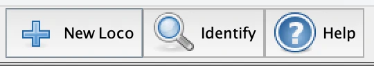

Step 1
Click on the “New Loco” button. It normally appears in the toolbar at the top, above any roster entries.

The New Loco button in the JMRI toolbar.
 A screenshot of a sample roster in JMRI DecoderPro.
Back to the introduction of the DecoderPro tutorial.
A screenshot of a sample roster in JMRI DecoderPro.
Back to the introduction of the DecoderPro tutorial.